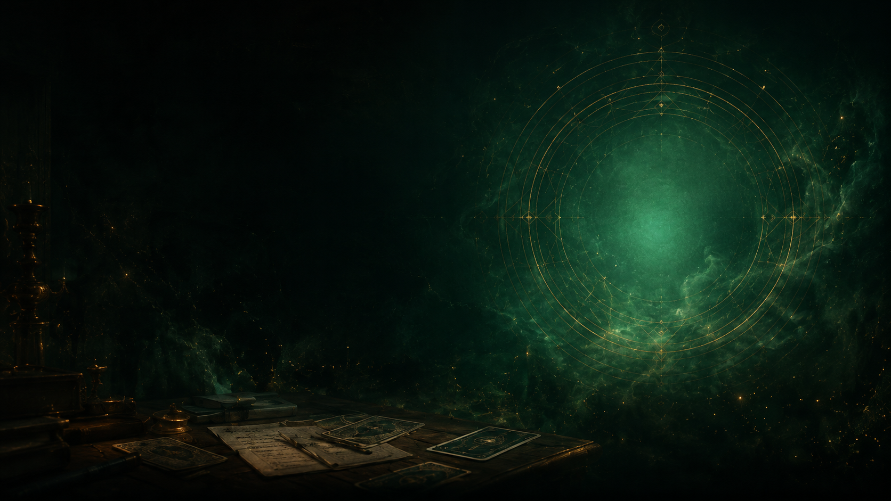
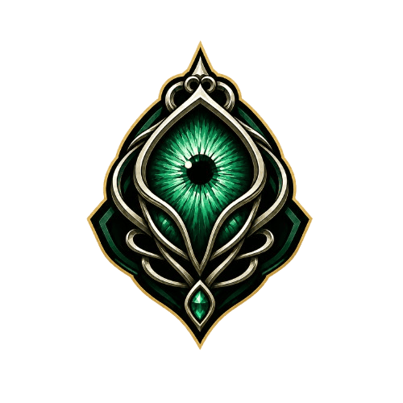
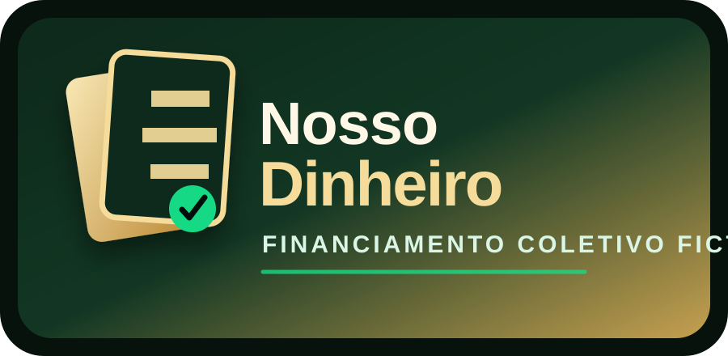
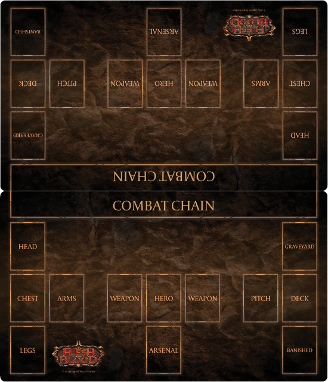

Command and Conquer
JP compra uma carta especial por um preço muito abaixo do mercado. Quando ela entra no deck, sua sorte muda — e fica difícil saber se é só uma Command and Conquer ou se tem algo querendo surgir dela.
Abrir obraArquivo narrativo da comunidade
A mesa onde tudo pode acontecer.
Visual novels, graphic novels, fanfics, HQs, imagens e histórias fictícias inspiradas por card games, blefes, derrotas, obsessões e pequenas lendas locais.

Algumas histórias nascem entre uma rodada e outra. Aqui, uma carta pode ser pista, maldição, piada interna ou o começo de uma queda muito estranha.
Escolha uma cadeira
Cada obra abre em uma página própria, com arquivos e layout independentes.

JP compra uma carta especial por um preço muito abaixo do mercado. Quando ela entra no deck, sua sorte muda — e fica difícil saber se é só uma Command and Conquer ou se tem algo querendo surgir dela.
Abrir obra
Uma campanha fictícia do NossoDinheiro para preservar, catalogar e proteger todas as cartas colecionáveis já impressas.
Abrir obra
Um exercício interativo de final de partida: ambos estão com 1 de vida, o Oscilio tem uma resposta arcana preparada e você precisa encontrar a linha correta com Victor Goldmane.
Abrir obra
Um relato estranho encontrado depois de um torneio. Ninguém lembra quem escreveu. Todo mundo lembra da última rodada.
Cartas na mesa, risadas fora de hora e uma história que provavelmente não deveria ter sido desenhada.